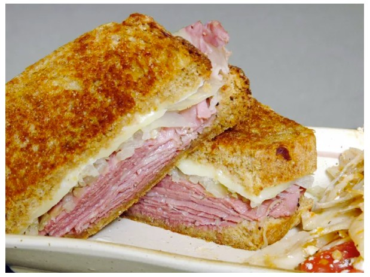

Sandwich
Home

Description
This is just a Sandwich with homemade ingredients. It is a simple yet wholesome recipe. Yum yum yum...
You can use the same ingredients that are listed below, but you're more than welcome to try and modify this recipe according to your own text
Ingredients
- Two slices of rye bread
- Pastrami
- Sauerkraut
- Swiss cheese slice
- Sauces:
Steps
- Cook the Pastrami to the desired point
- Add a slice of cheese on top of the Pastrami
- Once melted, transfer the Pastrami with the cheese to the bread
- Add Sauerkraut
- Add dressing to taste